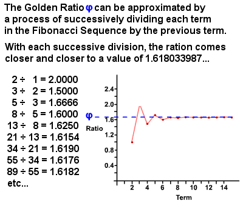
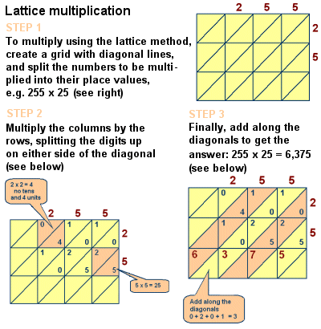

Leonardo "Fibonacci" Pisano
Leonardo "Fibonacci" Pisano
When looking in the past at Mathematicians that have contributed a lot to this field, Fibonacci has contributed a number of works. While living in the 12th and 13th Century, there was a lot that was done before his time, but he discovered many works that helped his predecessors and those in the field of mathematics. From creating his world famous sequence, the golden ratio, and even lattice multiplication, Fibonacci is a well known mathematician, but sometimes for the wrong reasons.
-
The Golden Ratio- The Golden Ratio is a number that Fibonacci found by evaluating his sequence. This was the ratio that the Greeks were interested as it had a lot of correlation in different areas of math. To begin, the Fibonacci Sequence takes place when one takes the number 1 and adds it's previous number. The result would then be added to the previous number. When looking at the Fibonacci numbers, he tried to find a decimal that applied to the ratio of each of the numbers. For example, 5 and 3 are both numbers of the sequence. When 5 is divided by 3, the decimal is 1.6 repeating. Two more numbers 89 and 55 divide to make the number 1.61. When continuing on, Fibonacci found that the ratio of these numbers, the Golden Ratio, is 1.618033987. The radical that best represents this is (1+5.5)/2. 
-
Lattice Multiplication- The other famous discovery that Fibonacci was credited with was the idea of Lattice Multiplication. He liked to use squares in solving. Although this idea was not found by him, he helped describe this idea and made it well known as a way of multiplying large numbers. The image below does a fantastic job of describing the process of multiplying this way. This is very similar to the way that people learn to multiply numbers by lining up their place values. This way eliminates the problem of forgetting to carry extra numbers when multiplying to a product that is larger than 10. 